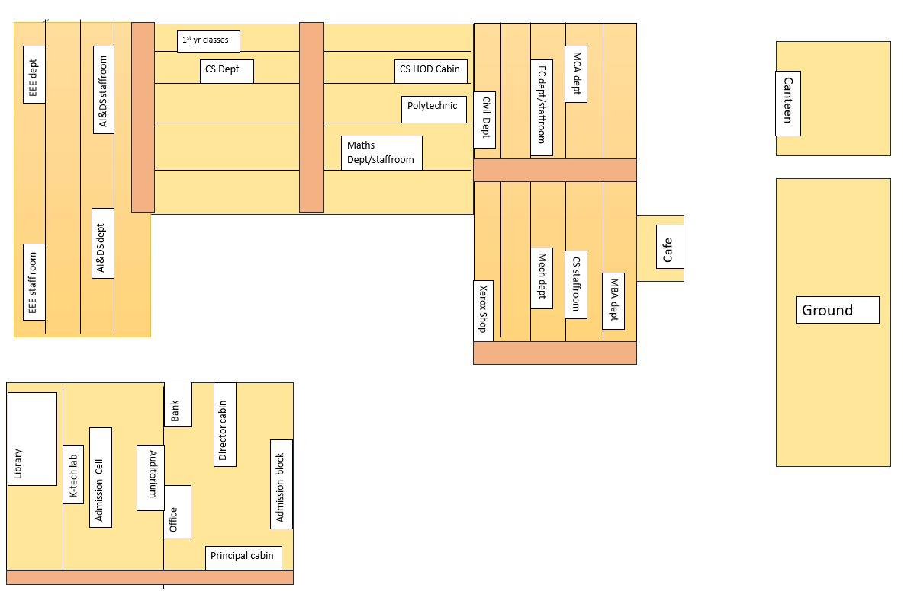

Home
Q&A Forum
Campus Map
Chatbot

Main Gate ↑ [Start]
College Map
Block1 : Administrative Block
Block2 : EEE (4th Floor)/AI (2nd Floor)
Block3 : CS (4th Floor)/Polytechnic (3rd Floor)/Math Department (2nd Floor)
Block4 : MBA (4th Floor)/MCA (3rd Floor)/Civil Department (1st Floor-left)/Xerox (1st Floor-Right)
Block5 : Canteen/Ground
Stairs
Admission Block & Bank
Admission cell & Auditorium
AI&DS dept
Cafe
Canteen
Civil Department
CS Department
EC
EEE
Ground
Library
Math department
MBA department
MCA department
Mechanical department
Polytechnic
Xerox